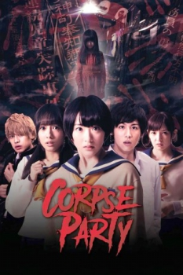

Also known as:コープスパーティー (original title)
Country:Japan, 93 minutes
Spoken languages:Japanese
Genres:Horror, Mystery
Director(s):Masafumi Yamada
Writer(s):Yoshimasa Akamatsu
Video Codec:Unknown
Number: 2606


Certification:NC-17
Storyline:
Facing goodbyes and graduation, Naomi Nakashima, her childhood friend Satoshi Mochida, and their classmates, are clearing up after their last ever cultural festival, when horror buff class representative Ayumi Shinozaki decides to perform Sachiko Ever After so they will stay friends forever. Instead, they were whisked away to a haunted graduation ceremony for Heavenly Host Elementary School, forced to close after a series of gruesome murders. What fate awaits Naomi and her friends at the cursed school...?
Cast:

Medium: Original DVD,
Loaned: No
Aspect ratio: Unknown